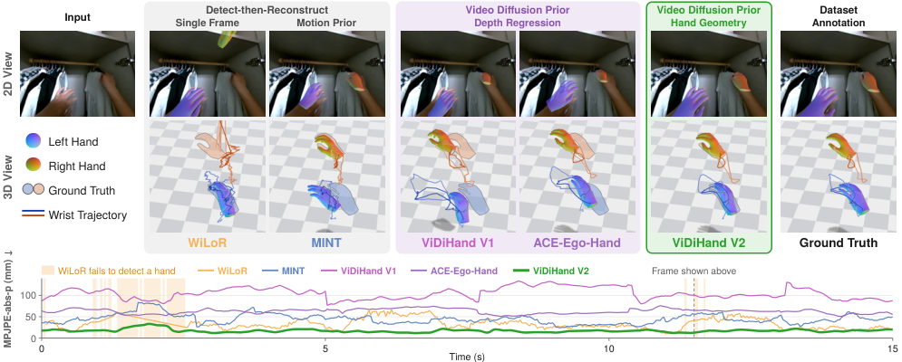

Hand & 2D joints
A video diffusion backbone predicts MANO pose and metric shape together with 2D joint locations.
Learn the hand. Locate the joints.
Let geometry find the depth.
Project preview · Paper and implementation links will be added upon release.

lower in-the-wild absolute error
than the strongest baseline
baselines evaluated
with the same training data
offline processing
on a single GPU
THE IDEA
Recovering hands from everyday video means working with cameras the model has never seen. A hand can look right in the image while sitting at the wrong depth in 3D.
ViDiHand V2 predicts a metric MANO hand and the 2D location of every joint. Instead of regressing absolute depth from appearance, it fits the hand to the camera rays over a whole clip, using the test camera’s intrinsics. Confidence-gated fusion then refines joints where their 2D locations are reliable.
IN THE WILD
Switch scenes to compare predictions.
All methods see the same input frame.
MANO overlays from the paper’s selected cases. Insets show a shared three-quarter view and preceding wrist trails. Pale hands indicate ground truth where available; Ego4D and Xperience have no ground truth here. These examples illustrate behavior, not its frequency.
HOW IT WORKS
No hand detector. No learned absolute depth. Camera intrinsics are used explicitly.

A video diffusion backbone predicts MANO pose and metric shape together with 2D joint locations.
Fit the metric hand to joint rays from the test camera. Solve for a stable wrist trajectory over the clip.
Move each joint toward its 2D location where the localization is reliable.
WHY GEOMETRY?
The same image evidence can imply different metric depth under different focal lengths. ViDiHand V2 computes placement using the supplied camera intrinsics rather than learning absolute depth from appearance.

EGOHANDBENCH
Six in-domain test sets.
Gen-HumanEgo in the wild.
All 18 baselines are trained on the same egocentric datasets. In-domain results average ARCTIC, H2O, HOT3D, OakInk2, Ego-Pro and Ego-Std. The table below reproduces the paper’s main comparison.
| Method | FAcc ↑ | F1 ↑ | MPJPE-abs-p ↓ | EPE2D-p ↓ | MPJPE-p ↓ | PA-p ↓ | Jitter ↓ |
|---|
FAcc and F1 in %. Pose errors in mm, EPE2D-p in pixels, jitter in mm/frame². “-p” evaluates all ground-truth hands, including a penalty for detection failures. Lower is better except detection metrics.
ViDiHand V2